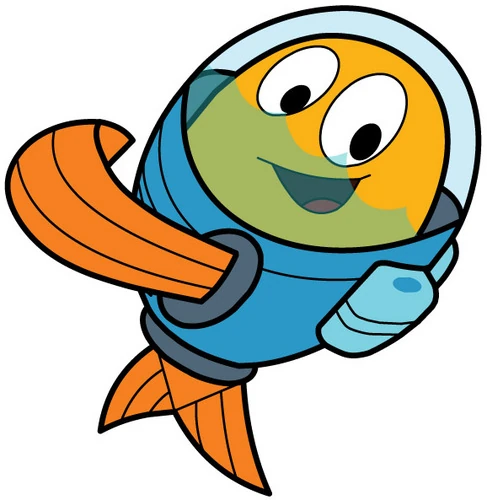

peixonauta
Peixonauta é um peixe muito especial e curioso que vive no fundo do oceano. Ele é um peixe com um grande sonho: explorar o mundo além do mar. Mas, ao contrário dos outros peixes, que se contentam com sua vida subaquática, Peixonauta sempre se perguntava o que havia além das águas.
Ele era muito inteligente, corajoso e sempre disposto a aprender mais sobre o mundo. Sua aparência não era comum: Peixonauta usava um capacete de mergulho especial e tinha um traje que o ajudava a respirar fora da água e a enfrentar os desafios que surgiam em suas aventuras.
Tudo começa quando Peixonauta é chamado para uma missão muito importante, junto com seus amigos. Ele e sua amiga Tina, uma peixe-lua muito engraçada, e Mister A, um camarão superinteligente, formam um time incrível de exploradores. Juntos, eles decidem enfrentar desafios, ajudar outros animais e, principalmente, descobrir o que há além do oceano.
Em suas aventuras, Peixonauta e seus amigos exploram diferentes lugares, conhecem novos animais e resolvem vários mistérios. Eles viajam por florestas, rios, praias e até enfrentam obstáculos na cidade, sempre trabalhando em equipe e usando suas habilidades únicas para encontrar soluções.
A Moral da História
As aventuras de Peixonauta são educativas e cheias de aprendizado. Ele ensina as crianças sobre a importância da curiosidade, do trabalho em equipe e de enfrentar desafios com coragem e sabedoria. Além disso, as histórias abordam questões sobre meio ambiente, amizade e a importância de cuidar da natureza.
Peixonauta é um exemplo de como a curiosidade e a determinação podem levar à descoberta e ao crescimento, mostrando que o mundo é cheio de maravilhas a serem exploradas, seja dentro ou fora da água!
